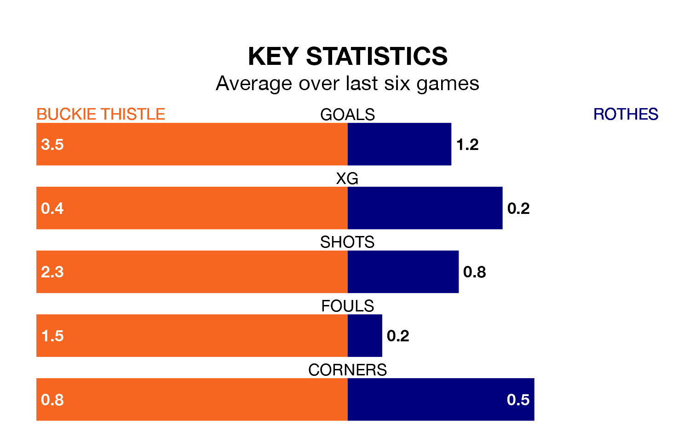

Rothes travel to Victoria Park looking to secure a first win in 10 Highland Football League games against Buckie Thistle on Saturday.
Rothes have lost five and drawn four matches since they last earned three points – against Forres Mechanics on November 25.
They face a Buckie Thistle side who have won seven and lost two over that time.
In the last 10 years, Buckie Thistle and Rothes have played each other on 12 occasions. Buckie Thistle won 10 of them and they drew twice.
On average, Buckie Thistle scored 3.3 goals and Rothes 0.8 in those matches.
Their last meeting was on October 4, when Buckie Thistle won 3-1 away.
With 47 goals in 15 games so far this season, Buckie Thistle are scoring more than average in the league with 3.1 goals per game. And they are conceding fewer than average, letting in 17 goals at a rate of 1.1 per game.
Rothes, meanwhile, are below average scorers, with 1.2 goals per game, compared to a league average of 1.9. They have conceded 1.8 goals per game.
The hosts are sixth in the table after 15 games, of which they have won 12 and drawn one, earning 37 points.
The away team are four places behind Buckie Thistle in 10th, with eight wins and five draws putting them on 29 points.
Buckie Thistle's last match was on Saturday, a 3-0 loss against Nairn County.
Rothes lost 4-1 against Inverurie Loco Works last time out, also on Saturday.
Updated: 13:52 (UTC), 05/02/24